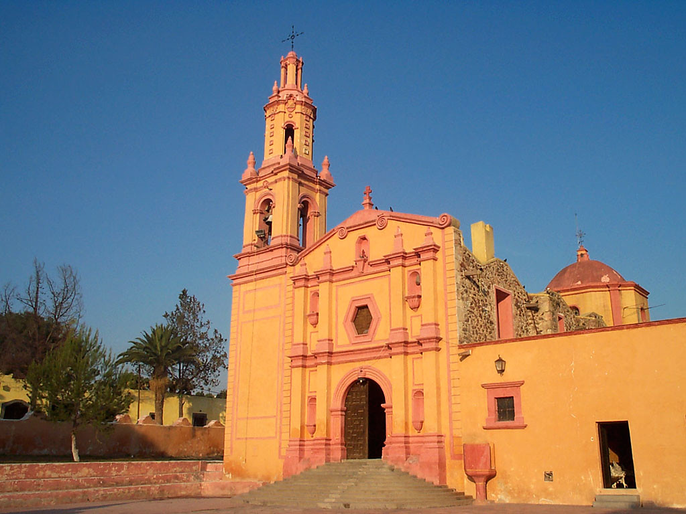

San Miguel de la Tetillas, hoy Villa Progreso
Villa Progreso o San Miguel de las Tetillas como era nombrado, es una población que se encuentra localizada a 7 Km. de la cabecera municipal de Ezequiel Montes y a 67 km. de la capital del estado de Queretaro.
Retoma el nombre de Tetillas por sus dos cerritos que de esta forma tienen, uno de ellos, el mas grande tienes una altura de 2300 msnm, en 1990 contaba con una población de 4302 habitantes 1931 Hombres y 2370 mujeres con esto tiene un 19.7% de la población total del municipio, la población aun que por los otomíes era nombrado ‘Bothe’, que quiere decir ‘Lugar de los dos cerros’. A Tetillas se le agrega el nombre de San Miguel de las Tetillas pro los Evangelizadores debido a que el Arcángel San Miguel es el patrono del lugar, en el año 1942 es cuando se le cambia el nombre a Villa Progreso durante el periodo del Delegado Municipal Dan Benjamin Velazquez.
Al norte colinda con el municipio de Cadereyta, al sur con Tequisquiapan, al oriente con el estado de Hidalgo, y al poniente con la cabecera municipal de Ezequiel Montes, Qro.
Villa Progreso fue habitado por otomíes llegados de la provincia de Xilotepec, cuenta con tres Barrios principales que son: Santa Maria, San Miguel y San Jose. El lugar es de clima templado cálido cuenta con varios manantiales, sus habitantes se dedican a la jarciaría y muchos de ellos artesanos de Henequen y el ixtle.
Sus principales festejos patronales se llevan aa cabo en dos fechas principales: el día 8 de Mayo y el 29 de Septiembre conmemorando la llegada y el santo sucesivamente del Arcángel San Miguel. Además se realizan diferentes fiestas religiosas durante todo el año como en la semana santa festejando a los cristos. Se festejan también alas animas, San Jose Obrero, Santa Maria Concepción y a diferentes Santos que son venerados en cada una de las Capillas antiguas que existen en el pueblo, todo esto se festeja con platillos tradicionales que son el mole, nopales de santo, nopales con camarón, tamales, atole, etc.
Entre sus sitios de valor cultural se encuentra el templo de San Miguel Arcángel con su retablo principal, y sus mas de cuarenta capillas oratorias.